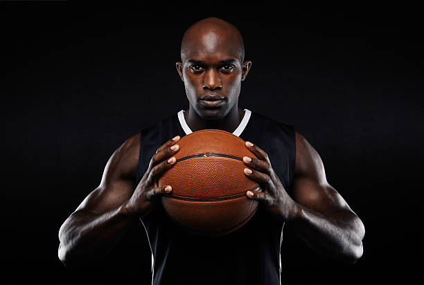
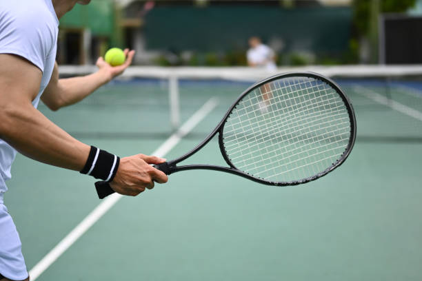
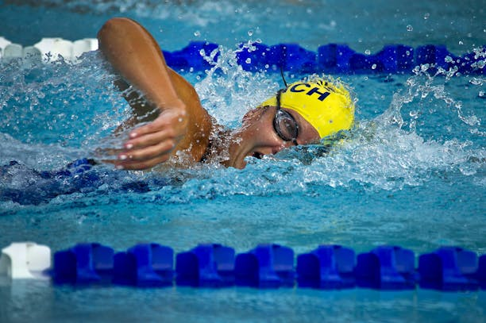
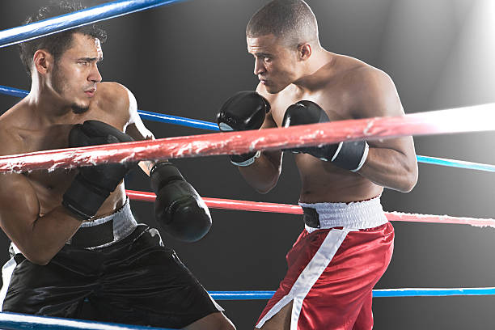

Getty Images/iStockphoto
Getty Images/iStockphoto
Fotball
Fotball er en populær lagsport der to lag med 11 spillere konkurrerer om å score flest mål ved å få ballen inn i motstanderens nett. Sporten spilles på en rektangulær bane med to mål, og hovedregelen er at spillerne, unntatt målvakten, ikke kan bruke hendene. Trykk for å lese mer
 Getty ImagesBasketball
Basketball er en intens lagidrett der to lag med fem spillere prøver å score poeng ved å kaste ballen gjennom en kurv. Spillet foregår på en rektangulær bane, og spillerne må bruke raske bevegelser og taktikk for å overvinne motstanderens forsvar. Trykk for å lese mer
 Getty ImagesTennis
Tennis er en sport der spillere bruker racketer for å slå en ball over et nett og konkurrerer om å vinne flest poeng. Spillet kan spilles én-mot-én eller i par, og banen er delt inn i ulike soner avhengig av spillestilen. Trykk for å lese mer
 Pexels imagesSvømming
Svømming er en allsidig idrett som utføres i basseng eller åpent vann, hvor utøvere bruker forskjellige svømmestiler som crawl og butterfly. Målet er å fullføre en gitt distanse raskest mulig med styrke og utholdenhet. Trykk for å lese mer
 Getty ImagesBoksing
Boksing er en kampsport der to utøvere i en ring bruker hansker til å slå hverandre for å vinne poeng eller oppnå knockout. Sporten krever styrke, taktikk og hurtighet, og kampene er delt opp i faste runder. Trykk for å lese mer